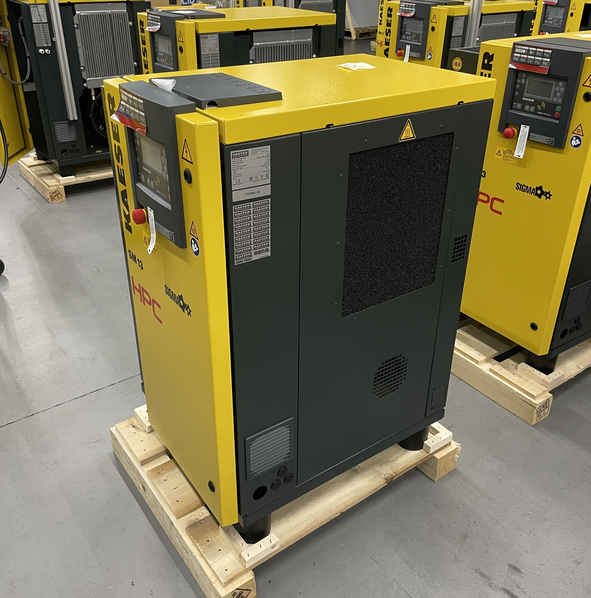
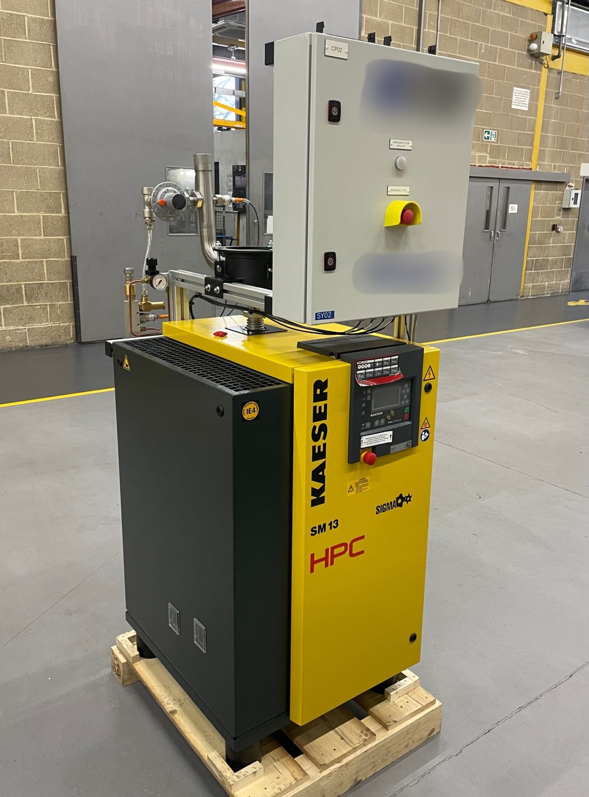
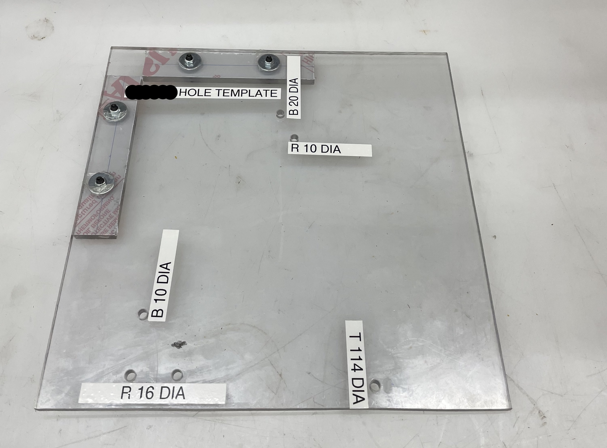
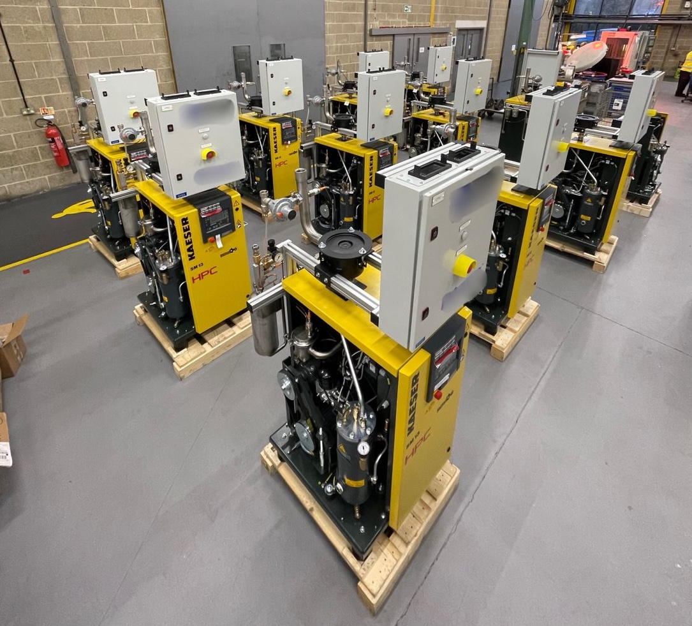
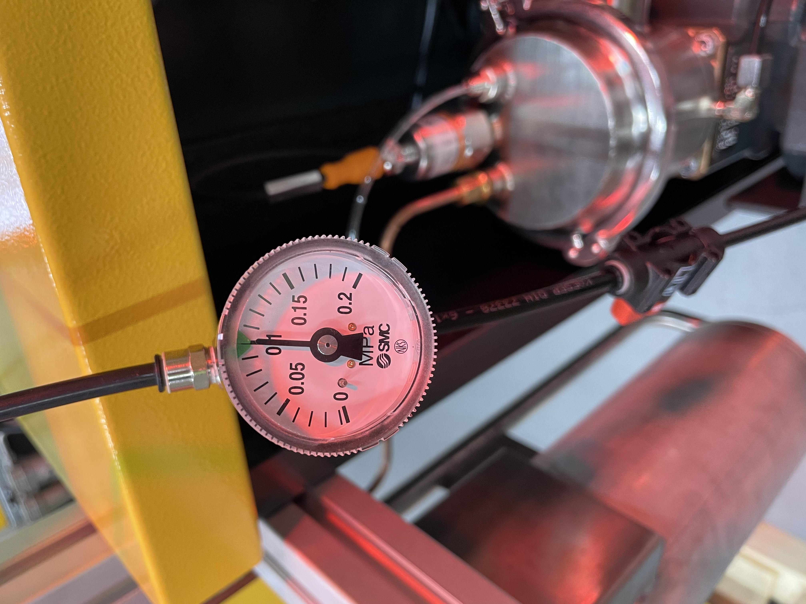

HPC Compressed Air Systems was commissioned to retrofit 25 SM13 compressors for use in argon recovery. The design had already been completed as a one-off by the OEM customer; however, they wanted to investigate the viability of batch producing the retrofit machines. HPC was supplied the required parts, and images of the final design, and tasked with putting together the build and test instructions to commission the machines.


During a year I took out of university to focus on personal circumstances, I was presented with the opportunity to do a 4-month placement overseeing this project. It aligned with my capacity at the time and so I took the opportunity. I was tasked with manufacturing/assembling the batch of 25 compressors alongside developing full build and qualification instructions for future (bigger) batches.
It was an interesting project that gave me my first real insight into fluid systems and their assembly processes, while also improving my organisational, and communication skills. Developing build instructions where I knew I would not be overseeing the production process required clear instruction where mistakes were designed out of the process. Building tools such as custom jigs and an inventory tracker helped streamline the process and ensure a high-quality, repeatable build after I left.

A simple jig that saved so much time

Nearly finished

My first taste of leak testing